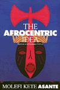

| 
|
Abortion
Between Freedom and Necessity
Hadley, Janet
This new paperback contains an epilogue that discusses changes
and events that occurred since 1996
New in Paperback!
256 pp • 6x9 • Fall 1996
paper 1-56639-591-7
EAN 978-1-56639-591-5
|
| 
|
The
Afrocentric Idea
Asante, Molefi Kete
Asante's spirited engagement with culture warriors, neocons, and
postmodernists updates this classic
Revised and Expanded Edition
256 pp • 5.5x8.2 • Fall 1997
paper 1-56639-595-X
EAN 978-1-56639-595-3
cloth 1-56639-594-1
EAN 978-1-56639-594-6
|
|
|
The
Best of The Harvard Gay & Lesbian Review
Schneider, Jr., Richard, and Edmund White, eds.
A selection of notable essays from the landmark publication
363 pp • 6x9 • Fall 1997
cloth 1-56639-596-8
EAN 978-1-56639-596-0
|
|
|
Borscht
Belt Bungalows
Memories of Catskill Summers
Richman, Irwin
A history memoir and photo album of Jewish summers in the Catskills
256 pp • 7x10 • Fall 1997
cloth 1-56639-585-2
EAN 978-1-56639-585-4
|
|
|
The
Brazilian Sound
Samba, Bossa Nova, and the Popular Music of Brazil
McGowan, Chris, and Ricardo Pessanha
An encyclopedia survey of Brazilian popular music
New Edition
256 pp • 7x10 • Fall 1997
paper 1-56639-545-3
EAN 978-1-56639-545-8
cloth 1-56639-544-5
EAN 978-1-56639-544-1
|
| 
|
Chanting
Down Babylon
The Rastafari Reader
Murrell, N. Samuel, William D. Spencer, and Adrian Anthony McFarlane
A comprehensive and indispensable study of the Rastafarian Movement
467 pp • 7x10 • Fall 1997
paper 1-56639-584-4
EAN 978-1-56639-584-7
cloth 1-56639-583-6
EAN 978-1-56639-583-0
|
|
|
Claiming
America
Constructing Chinese American Identities during the Exclusion
Era
Wong, K. Scott, and Sucheng Chan, eds.
A collection of essays that recovers the lives and experiences
of individuals who staked their claim to Chinese American identity
226 pp • 6x9 • Fall 1997
paper 1-56639-576-3
EAN 978-1-56639-576-2
cloth 1-56639-575-5
EAN 978-1-56639-575-5
|
|
|
Ecological
Politics
Ecofeminists and the Greens
Gaard, Greta
An illuminating account of two interconnected social movements
from their grassroots origins in the 1970s to the 1996 Green presidential
campaign
337 pp • 6x9 • Fall 1997
paper 1-56639-570-4
EAN 978-1-56639-570-0
cloth 1-56639-569-0
EAN 978-1-56639-569-4
|
|
|
Family
Ties
Enduring Relations between Parents and Their Grown Children
Logan, John R., and Glenna D. Spitze
A challenging look at the way relationships between parents and
their adult children remain strong in the midst of social change
New in Paperback!
304 pp • 6x9 • Fall 1996
paper 1-56639-472-4
EAN 978-1-56639-472-7
|
|
|
Fishing
the Delaware Valley
Ingram Jr., George H., Robert F. Marler Jr., Robert R. Smith, and
Joe Humphreys
Fishing tales from the Delaware Valley
256 pp • 6x9 • Fall 1997
cloth 1-56639-588-7
EAN 978-1-56639-588-5
|
|
|
The
Forest and the Trees
Sociology as Life, Practice, and Promise
Johnson, Allan G.
A thought-provoking and passionate account of why sociology matters
that will engage and inspire students and teachers
216 pp • 5.5x8.25 • Fall 1997
paper 1-56639-564-X
EAN 978-1-56639-564-9
cloth 1-56639-563-1
EAN 978-1-56639-563-2
|
|
|
Free
Trade?
Informal Economies at the U.S.-Mexico Border
Staudt, Kathleen
How petty regulations feed grand global hegemonies that cheapen
labor
256 pp • 5.5x8.25 • Fall 1997
paper 1-56639-568-2
EAN 978-1-56639-568-2
cloth 1-56639-567-4
EAN 978-1-56639-567-0
|
|
|
I
Can't Remember
Family Stories of Alzheimer's Disease
Smoller, Esther Strauss, and Kathleen O’Brien
Photographs and personal stories of the everyday trials of Alzheimer's
patients and their families
136 pp • 7x10 • Fall 1997
cloth 1-56639-555-0
EAN 978-1-56639-555-7
|
|
|
Mexican
American Women Activists
Identity and Resistance in Two Los Angeles Communities
Pardo, Mary
The story of Mexican American women in two communities who took
control and made a difference
322 pp • 5.5x8.25 • Fall 1997
paper 1-56639-573-9
EAN 978-1-56639-573-1
cloth 1-56639-572-0
EAN 978-1-56639-572-4
|
|
|
Midwifery
and Childbirth in America
Rooks, Judith Pence, and Charles S. Mahan, M.D.
The definitive account of the many forces that intersect over the
issue of childbirth
576 pp • 7x10 • Fall 1997
cloth 1-56639-565-8
EAN 978-1-56639-565-6
|
|
|
Misconceiving
Mothers
Legislators, Prosecutors, and the Politics of Prenatal Drug Exposure
Gomez, Laura
How public policy about reproduction and crime is made
256 pp • 5.5x8.25 • Fall 1997
paper 1-56639-558-5
EAN 978-1-56639-558-8
cloth 1-56639-557-7
EAN 978-1-56639-557-1
|
| 
|
Nisei/Sansei
Shifting Japanese American Identities and Politics
Takahashi, Jere
A fresh look at the many and diverse political strategies that
forged a Japanese American identity
280 pp • 6x9 • Fall 1997
cloth 1-56639-550-X
EAN 978-1-56639-550-2
|
|
|
Orixás
Os Deuses Vivos da África
Orishas
The Living Gods of Africa in Brazil
Nascimento, Abdias do, and Molefi Kete Asante
Work of Afro-Brazilian artist Nascimento now available to the U.S.
market
170 pp • 10x11 • Fall 1997
cloth 85-85853-018
EAN 978-85-85853-013
|
|
|
A
Part, Yet Apart
South Asians in Asian America
Shankar, Lavina Dhingra, and Rajini Srikanth
The first comprehensive study of the peripheral position and invisibility
of South Asian perspectives within Asian America
320 pp • 6x9 • Fall 1997
paper 1-56639-578-X
EAN 978-1-56639-578-6
cloth 1-56639-577-1
EAN 978-1-56639-577-9
|
|
|
Policing
Women
The Sexual Politics of Law Enforcement and the LAPD
Appier, Janis Marie
How women expanded policework and unwittingly created the conditions
for more agressive policing
256 pp • 6x9 • Fall 1997
paper 1-56639-560-7
EAN 978-1-56639-560-1
cloth 1-56639-559-3
EAN 978-1-56639-559-5
|
|
|
Readings
in American Indian Law
Recalling the Rhythm of Survival
Carrillo, Jo, ed.
33 works that introduce and conceptualize some of the most symbolically
important areas of federal Indian law: identity, reparations, incommensurability,
cultural property, tribal governance, and religious freedom
353 pp • 7x10 • Fall 1997
paper 1-56639-582-8
EAN 978-1-56639-582-3
cloth 1-56639-581-X
EAN 978-1-56639-581-6
|
|
|
Rethinking
the Cold War
Hunter, Allen, ed.
A path-breaking collection of essays by cutting-edge authors that
reassess the Cold War since the fall of communism
320 pp • 6x9 • Fall 1997
paper 1-56639-562-3
EAN 978-1-56639-562-5
cloth 1-56639-561-5
EAN 978-1-56639-561-8
|
|
|
Robert
Kennedy
Brother Protector
Hilty, James W.
The relationship between a President and his 'tough as nails' alter
ego and brother
672 pp • 6x9 • Fall 1997
cloth 1-56639-566-6
EAN 978-1-56639-566-3
|
|
|
Searching
for Safe Spaces
Afro-Caribbean Women Writers in Exile
Chancy, Myriam J.A.
In exile but finding no refuge, Afro-Caribbean women portray harsh
lives
272 pp • 6x9 • Fall 1997
paper 1-56639-540-2
EAN 978-1-56639-540-3
cloth 1-56639-539-9
EAN 978-1-56639-539-7
|
|
|
Sponsored
Identities
Cultural Politics in Puerto Rico
Davila, Arlene M
How views of national identity are forged and contested in Puerto
Rico by local and transnational forces
301 pp • 5.5x8.25 • Fall 1997
paper 1-56639-549-6
EAN 978-1-56639-549-6
cloth 1-56639-548-8
EAN 978-1-56639-548-9
|
| 
|
Street
Addicts in the Political Economy
Waterston, Alisse
The moving first-person accounts of drug addicts on the streets
of New York
New in Paperback!
304 pp • 5.5x8.25 • Fall 1992
paper 1-56639-574-7
EAN 978-1-56639-574-8
|
|
|
Transgender
Care
Recommended Guidelines, Practical Information, and Personal Accounts
Israel, Gianna E., Donald E. Tarver, and Diane Shaffer
An outstanding reference work by specialists for the transgendered
304 pp • 6x9 • Fall 1997
cloth 1-56639-571-2
EAN 978-1-56639-571-7
|
|
|
Workin'
It
Women Living Through Drugs and Crime
Pettiway, Leon
Five female law-breakers describe their lives in their own words
304 pp • 6x9 • Fall 1997
paper 1-56639-580-1
EAN 978-1-56639-580-9
cloth 1-56639-579-8
EAN 978-1-56639-579-3
|